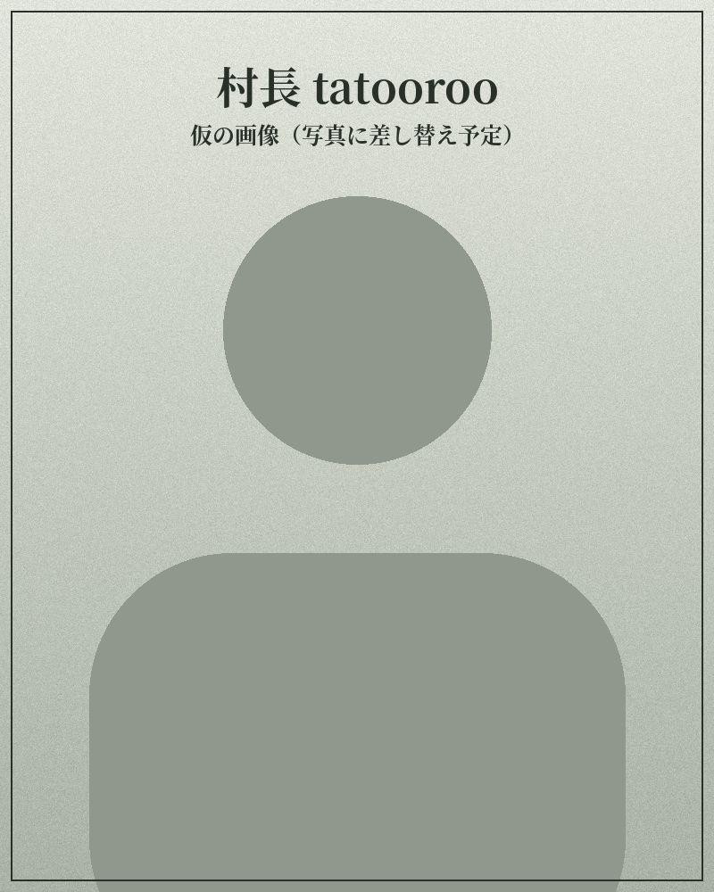
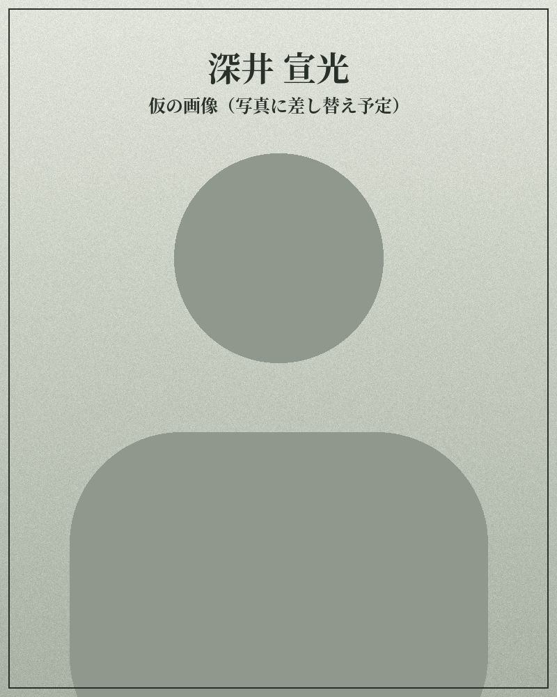

村の人

村長
tatooroo
富山商会の代表で、村門のマスター。音楽を通じて世界中のミュージシャンとつながる。草刈りと環境管理の仕事から田んぼと里山を守り、村の田畑と山を束ねて天空米を届ける。

女将
しお
村の顔として、訪れた人を迎える。村門と村宿のもてなしを担う。

アドバイザー
深井 宣光
SDGsについて出版・発信を続けてきた。今年から田んぼに立ち、理念を暮らしの実践へつなぐ役を担う。
SDGsは、自然や地域を「守るもの」として考えるきっかけをくれました。この村は、そこからもう一歩、自然の中へ入ります。
田を手で耕し、山で獲り、川と海で釣る。湯で体を休め、夜は音楽で人と集う。自然のめぐりの中で暮らすことを、そのまま体験として開きます。
NPO法人 村の音は、天空米の生産者です。
八尾の山里では、農業の担い手不足、後継者不足、過疎化が進んでいます。田んぼの手入れが行き届かなくなると、水源や美しい里山の景観も守れなくなります。
村の音は、この里山を「守る対象」ではなく、私たちが息づく「暮らす場所」として取り戻すために生まれたNPO法人です。地域でいちばん高い場所にある田んぼで、農薬も肥料も使わずに天空米を育て、村の拠点をつなぎ、都会で疲れた人が自然の中で回復できる農業体験を開きます。
一粒のお米から、地域の未来をつくる。
富山商会は、天空米の販売者です。
草刈りや雑草管理、墓地の清掃・維持管理など、地域の環境を守る仕事を続けてきた会社。除草剤に頼らない雑草管理を提案・実現しています。
農薬・化学肥料を使わない米づくりの技術支援と天空米の販売を担います。
9つの拠点が、ひとつの暮らしの輪になっています。
農薬も肥料も使わず、山の上の田んぼで天空米を育てる。
山と川と海から、命をいただく。
食べて、音楽を聴き、泊まって、湯に浸かる。
体験の受付と仲間づくり。村の外の人を、輪の中へ。
天空米と、いただいた山の恵みは村門の料理になり、人が集まり、また田んぼに人手が戻ってくる。
SDGsの考え方の多くは、里山の暮らしの中で昔から続いてきたものです。
| 日本の言葉 | どんな知恵か | 近いSDGsの目標 |
|---|---|---|
| 里山 | 人が手を入れ続けることで保たれる自然。田んぼ、雑木林、水路が一体になって、生きものと暮らしを支える。 | 6 水 ・ 15 陸の豊かさ |
| 結（ゆい） | 田植えや稲刈り、屋根のふき替えを、集落の皆で順番に助け合う。 | 11 住み続けられるまち ・ 17 パートナーシップ |
| 入会（いりあい） | 山や水路を村の共有の財産として、決まりをつくって皆で使い、守る。 | 6 水 ・ 15 陸の豊かさ |
| もったいない | ものの命を使い切る。わらは縄や堆肥に、もみがらは燻炭に。 | 12 つくる責任 つかう責任 |
| 三方よし | 売り手よし、買い手よし、世間よし。商いは地域のためにもなってこそ。 | 8 働きがいと経済成長 ・ 12 つくる責任 つかう責任 |
| 山の神・田の神 | 自然から恵みを借りて生きているという畏れと感謝。祭りや行事として受け継がれてきた。 | 13 気候変動 ・ 15 陸の豊かさ |
| 百姓 | 季節ごとに複数の生業を掛け持ちし、不作や気候のリスクを分散させるしなやかな経済。 | 8 働きがいと経済成長 ・ 12 つくる責任 つかう責任 |
| 旬と身土不二 | その土地、その季節にとれるものを無理なくいただき、身体の調子を合わせる。 | 3 健康と福祉 ・ 12 つくる責任 つかう責任 |
村がめざす「自然の一部として生きる」は、この日本流のSDGsを、暮らしと体験として取り戻すことです。

富山商会の代表で、村門のマスター。音楽を通じて世界中のミュージシャンとつながる。草刈りと環境管理の仕事から田んぼと里山を守り、村の田畑と山を束ねて天空米を届ける。
村の顔として、訪れた人を迎える。村門と村宿のもてなしを担う。

SDGsについて出版・発信を続けてきた。今年から田んぼに立ち、理念を暮らしの実践へつなぐ役を担う。